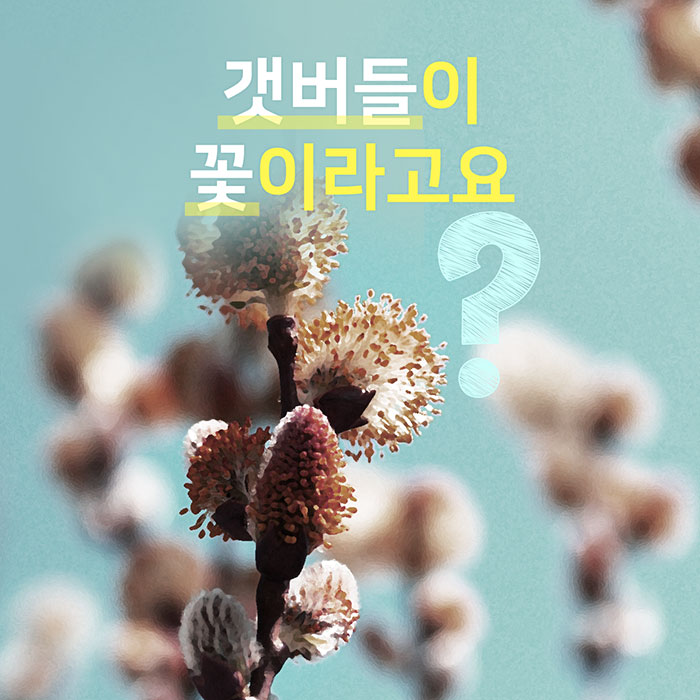
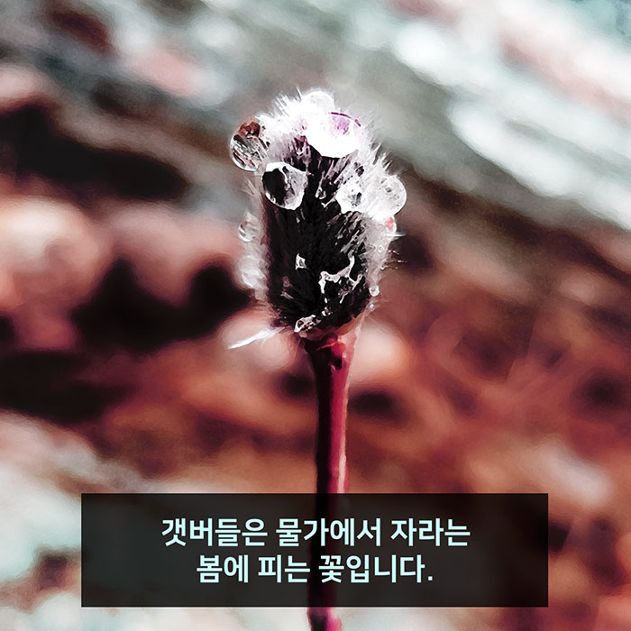
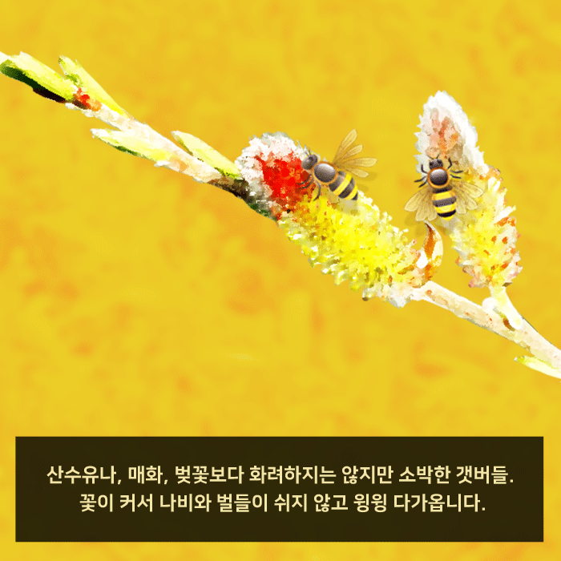
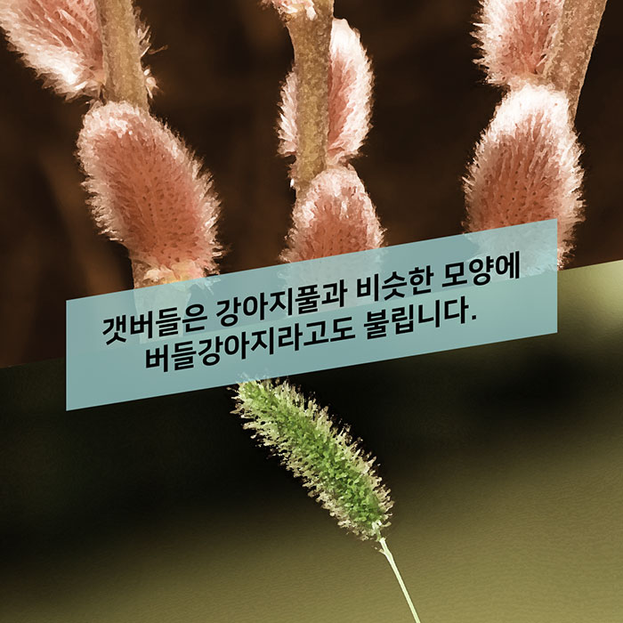
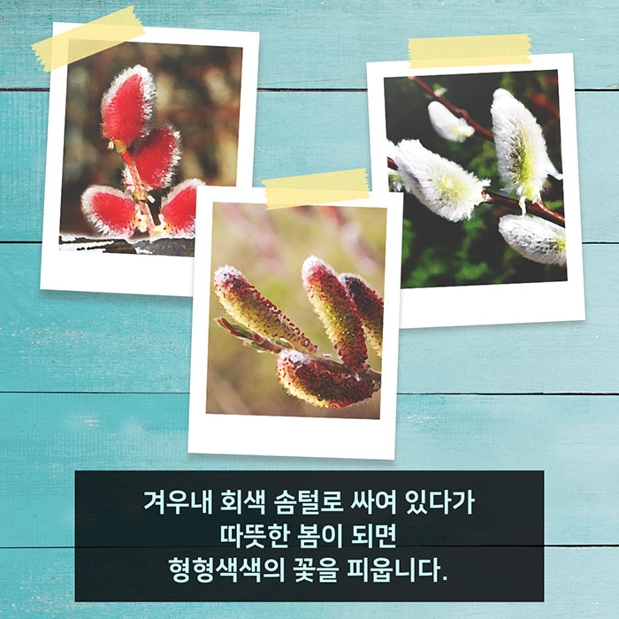
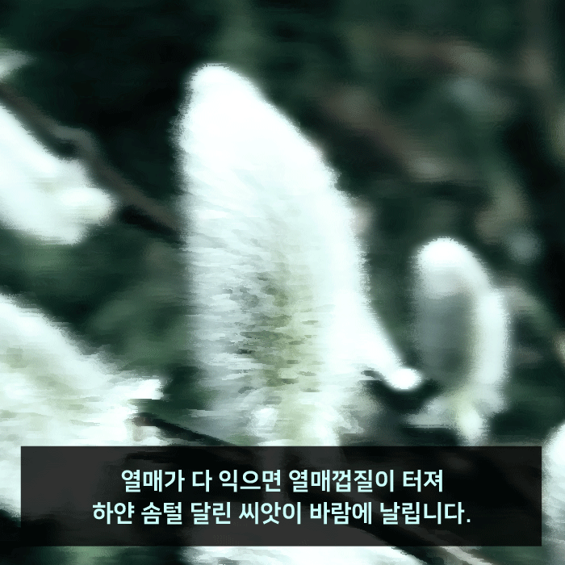
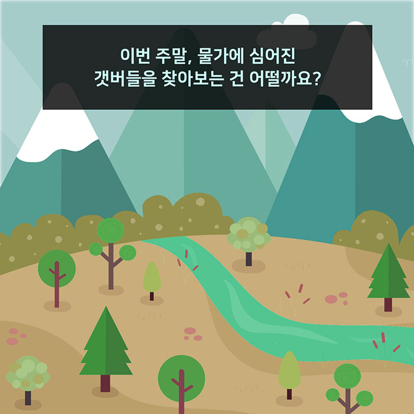

갯버들이 꽃이라고요?
갯버들은 물가에서 자라는 봄에 피는 꽃입니다.
산수유나, 매화, 벚꽃보다 화려하지는 않지만 소박한 갯버들. 꽃이 커서 나비와 벌들이 쉬지 않고 윙윙 다가옵니다.
갯버들은 강아지풀과 비슷한 모양에 버들강아지라고도 불립니다.
겨우내 회색 솜털로 싸여 있다가 따뜻한 봄이 되면 형형색색의 꽃을 피웁니다.
열매가 다 익으면 열매껍질이 터져 하얀 솜털 달린 씨앗이 바람에 날립니다.
이번 주말, 물가에 심어진 갯버들을 찾아보는 건 어떨까요?